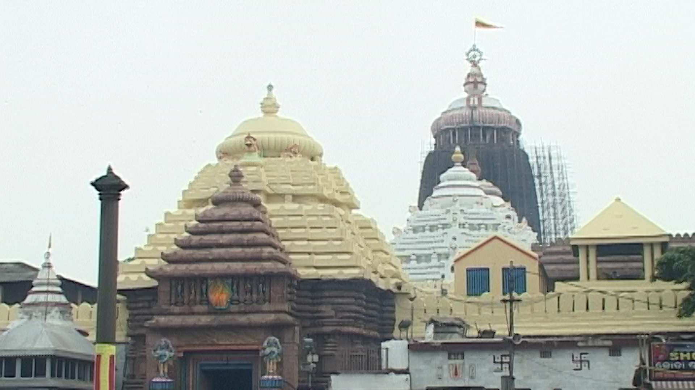
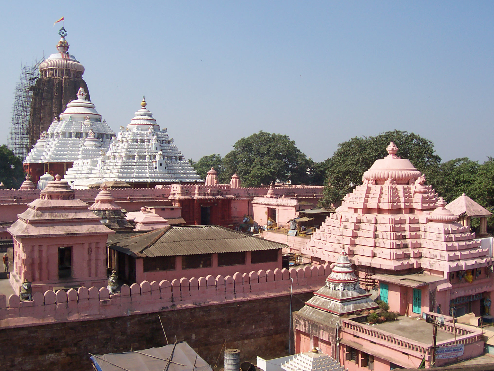
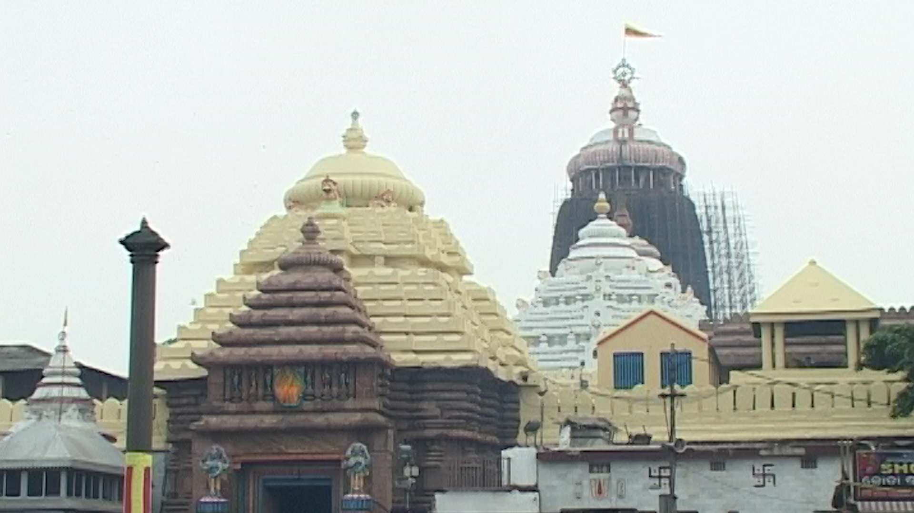
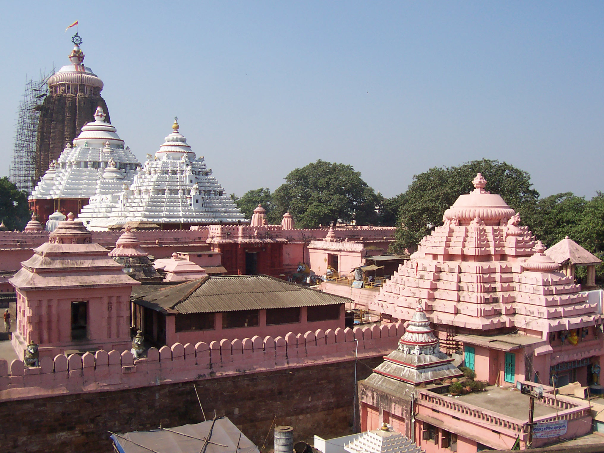

Salvation Quest
Salvation Quest
Jagannath Temple
A Quest for Moksh

 



About
The Shree Jagannath Temple of Puri is an important Hindu temple dedicated to Lord Jagannath, a form of lord Maha Vishnu , located on the eastern coast of India, at Puri in the state of Odisha. The temple is an important pilgrimage destination The present temple was rebuilt from the 10th century onwards, on the site of an earlier temple, and begun by King Anantavarman Chodaganga Deva, first of the Eastern Ganga dynasty. The Puri temple is famous for its annual Ratha yatra, or chariot festival, in which the three principal deities are pulled on huge and elaborately decorated temple cars. These gave their name to the English term Juggernaut. Unlike the stone and metal icons found in most Hindu temples, the image of Jagannath is made of wood and is ceremoniously replaced every twelve or nineteen years by an exact replica. The temple is sacred to all Hindus and especially in those of the Vaishnava traditions. Many great saints, such as Ramananda and Ramanuja were closely associated with the temple. Ramanuja established the Emar Mutt near the temple and the Govardhan Mutt, which is the seat of one of the four Shankaracharyas. It is also of particular significance to the followers of the Gaudiya Vaishnavism whose founder Chaitanya Mahaprabhu, was attracted to the deity, Jagannath, and lived in Puri for many years.
History
The temple was built by the Ganga dynasty king Anantavarman Chodaganga in the 12th century CE, as suggested by the Kendupatna copper-plate inscription of his descendant Narasimhadeva II.Anantavarman was originally a Shaivite, and became a Vaishnavite sometime after he conquered the Utkala region (in which the temple is located) in 1112 CE. A 1134-1135 CE inscription records his donation to the temple. Therefore, the temple construction must have started sometime after 1112 CE. According to a story in the temple chronicles, it was founded by Anangabhima-deva II: different chronicles variously mention the year of construction as 1196, 1197, 1205, 1216, or 1226.This suggests that the temple's construction was completed or that the temple was renovated during the reign of Anantavarman's son Anangabhima.The temple complex was further developed during the reigns of the subsequent kings, including those of the Ganga dynasty and the Suryvamshi (Gajapati) dynasty.
Temple Entry and Darshan
Non-Hindus are not permitted to enter the temple. Visitors not allowed to enter may view the temple and precinct from the roof of the nearby Raghunandan Library and pay their respects to the image of God Jagannath known at the main entrance to the temple. There is some evidence that this policy came into force following a series of invasions by foreigners into the temple and surrounding area. The temple is open from 5:00am to midnight. Unlike in many other temples, devotees can go around and behind the idols. During the special darshan, or parimanik darshan, devotees pay a small fee to go right up to the statues. All devotees are allowed to go right up to the deities during the sahana mela (general appearance) 7-8:00am without paying any fees The Dwarakadhisa Temple is also the location of Dvaraka Pitha, also called Sharada Matha/Peeth and "western peeth"), one of the four peeths (Sanskrit: "religious center") established by Adi Shankaracharya.
TRAVEL
Nearest airport to Puri is Bhubaneshwar's Biju Patnaik airport, at a distance of nearly 60 kilometres. Puri railway station is the nearest railway station in Puri, Odisha.
STAY
Since there are number of places to stay in Puri although choice can be made on the basis of tour : whether to have a travel package or going on with private staying desinations.